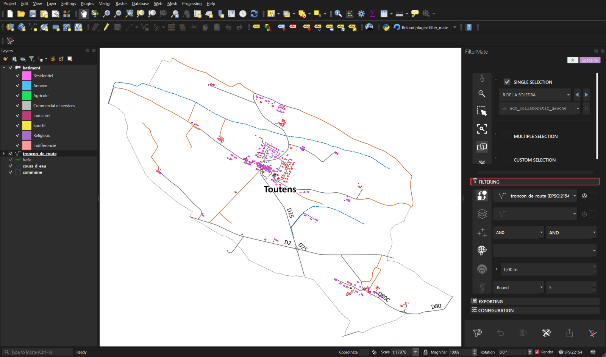

Oplevering · Saint-Gaudens
Een gemeentelijk dossier uit 12 departementale lagen
Selecteer de gemeente één keer, filter alle themalagen en exporteer een GeoPackage met stijlen en het QGIS-project.
- 12,380
- behouden gebouwen
- < 1 s
- gemeten filtertijd
Opensourceplug-in voor QGIS
Kies een object, een lijst of een QGIS-expressie. FilterMate past de ruimtelijke regel tegelijk op alle doellagen toe — in GeoPackage, PostGIS, SpatiaLite en andere vectorbronnen, zonder SQL te schrijven.
FilterMate 4.9.2 · QGIS 3.22–4.x · Qt5 en Qt6
BD TOPO® 3.5 © IGN, Haute-Garonne. Opgenomen in QGIS 4.2 met FilterMate 4.9.2.
De werkwijze
FilterMate brengt een terugkerende GIS-bewerking op meerdere lagen terug tot drie duidelijke stappen. Controleer de selectie en instellingen voordat u iets wijzigt.
Kies één object, vink er meerdere aan, neem de kaartselectie over of schrijf een QGIS-expressie.
Kies de doellagen, het ruimtelijke predicaat en eventueel een buffer. Controleer de bronselectie voordat u het filter toepast.
Controleer de aantallen op de kaart, maak het filter ongedaan of sla het op en exporteer zo nodig de gefilterde lagen.
Vier lagen rond Toutens, een QGIS-project met stijlen, een importeerbare favoriet en instructies in het Engels en Frans. Pak de ZIP uit voordat u het project opent.
Download de demo (ZIP, 203 KB)Gecontroleerde voorbeelden
Deze voorbeelden gebruiken het volledige BD TOPO-GeoPackage van Haute-Garonne van 2,9 GB. De gepubliceerde aantallen zijn onafhankelijk met dezelfde gegevens gecontroleerd.
Oplevering · Saint-Gaudens
Selecteer de gemeente één keer, filter alle themalagen en exporteer een GeoPackage met stijlen en het QGIS-project.
Ruimtelijke planning · Muret
Een QGIS-expressie stelt 300 m of 250 m in op basis van de wegcategorie.
1,999 gebouwen en 74 publiek toegankelijke voorzieningen
Bekijk instellingen en resultaat (EN)Kunstwerken · Toulouse Métropole
Het predicaat Cross sluit wegen uit die alleen langs het water lopen.
1,112 wegsegmenten en 190 kunstwerken
Bekijk instellingen en resultaat (EN)Nabijheid van wegen · Aspet
Disjoint met een buffer van 200 m vindt wat buiten de buffer ligt.
22 gehuchten op meer dan 200 m
Bekijk instellingen en resultaat (EN)
Het FilterMate-paneel staat naast de kaart en de lagenlijst, zodat bron, regel en resultaat samen zichtbaar blijven.
Dagelijks werken met QGIS
FilterMate houdt de hele werkwijze in één paneel, van selectie tot export.
Metingen in context
FilterMate kiest per vectorlaag een backend en gebruikt beschikbare ruimtelijke indexen. Deze cijfers horen bij het gedocumenteerde voorbeeld van Haute-Garonne en vormen geen algemene benchmark.
Gratis en open source
FilterMate staat in de officiële QGIS-plug-inrepository onder GPL-3.0.